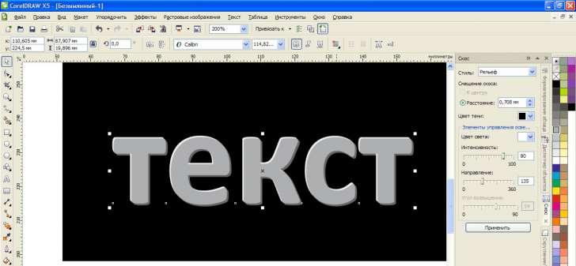
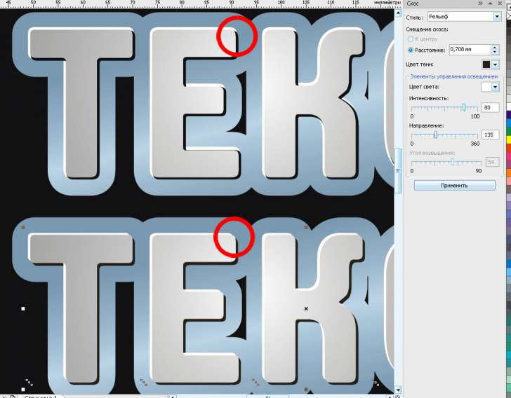

Оформление текста. Дополнение
sergey / 08.05.2011, 02:42/00:41
Форум:
Дополнение к уроку http://cdrpro.ru/news/2009-10-05-197.
Дополнение маленькое и несложное, но подробное!
Набираем текст и применяем Интерактивный контур
Эксперементально, настраиваем параметры
Необходимо разъединить и разгруппировать
Далее смещаем (стрелочкими) получившиеся контуры:
один — влево и вверх, другой — вправо и вниз.
Взависимости от того, откуда вы хотите чтобы падал свет — задаём цвет.

P.S. Можно нижнии контуры делать путём копирования или дублирования из основного, но на мой взгляд, когда они чуть-чуть отличаются по размеру, изображение получается более объёмное.
Пробуйте, эксперементируйте!
Всем творческих успехов!
а вот таким инструментом что не катит?

Никогда скосом не пользовался.
Надо поэксперементировать! Хотя, оценивая поверхностно, там не разбежишься.
Но! повторюсь: "Можно нижнии контуры делать путём копирования или дублирования из основного, но на мой взгляд, когда они чуть-чуть отличаются по размеру, изображение получается более объёмное".
А при использовании скоса — подложки и основной контур одинаковые.

Но это уже мелочь!
Хотя!
Стиль — Мягкий край — прикольно!
Буду пользоваться, спасибо!
Елинственное плохо, что сверху растр, а не вектор.
И заливка фонтанная не делается.
Способ конечно страдает тем, что применим к шрифтам со скруглёнными углами.
Для других шрифтов появится "лесенка" из углов.
Качественную фаску буквам можно сделать с помощью эффекта Вытягивание, задав опцию Скос вытягивания и Показывать только скос.
Чтобы фаска была одинаковой ширины вокруг буквы, для вытягивания надо задать режим Назад с увеличением, а точку схода поместить в центр объекта. Иначе фаска будет просматриваться в том же ракурсе, что и вытягивание (что может быть в некоторых случаях тоже интересно).
Используя опции освещения, можно получить гораздо более интересный вид фаски, нежели две градации подложек.
Solowejka,
(grammar nazi mode on)
знаки препинания после слова не отделяются пробелом, зато после - отделяются! 8-)
(grammar nazi mode off)
sergey, если щелкнуть по ней с контрол+альт то можно выделить или объект или растр и соответственно задать градиент, а растру применить рюмку с режимом наложения умножить (multiply).
mmgs, меня умиляет твой жест на аватарке. Ещё бы в руку трубку вложить и точь-в-точь
будешь на одного лидера походить, который с таким же жестом говорил: "А вот это правильно.".
Раз уж пошло такое дело, разобъясни пожалуйста, в предыдущем прдложении точка после закрывающих кавычек нужна? А перед закрывающими кавычками?
Может они (точки) обе правильные, но, как-то вроде не смотрится.
mmgs, на ошибки в первую очередь указывают неграмотные люди.
(эти ошибки допускают автоматически а не из-за неграмотности)
Комментируй по делу а не ищи у других ошибки.
Des425, пардон муа, но это просто на автомате.
потому как эти "автоматические ошибки" потом попадают в тиражи. и лучше заметить сразу и сказать, чем потом выплачивать из своего кармана. это так, лирика.
Solowejka, перед закрывающей кавычкой не нужна.